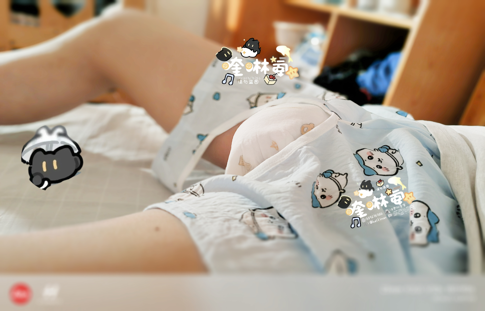
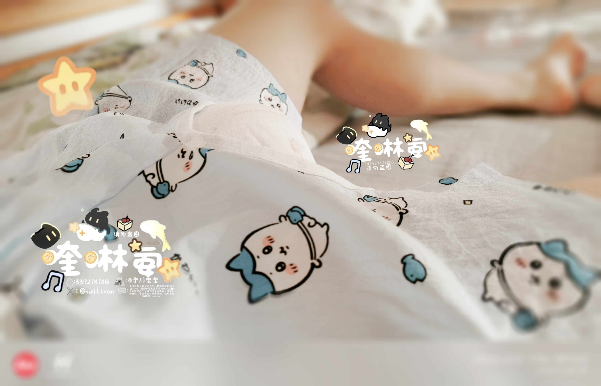
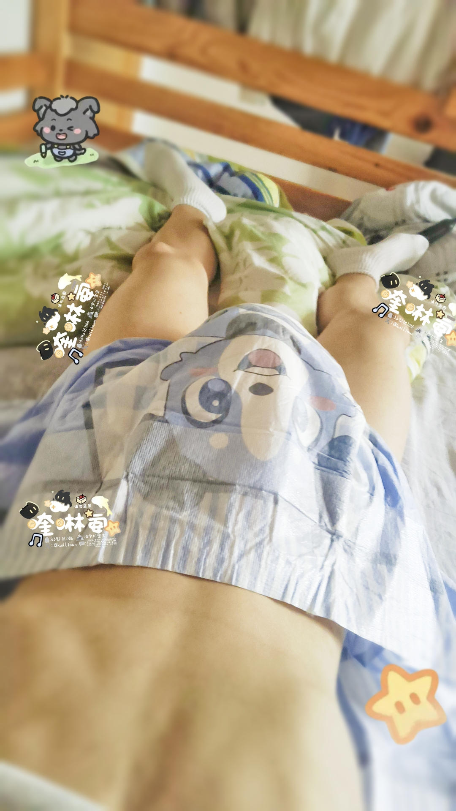

(◕ᴗ◕✿) 新年快乐哇！虽然已经过完啦，但还是要来给大家拜个晚年～
过年这段时间一直没来得及发帖，今天翻出手机里的库存酷酷照片，攒了六张，都是没删的宝贝！(⁄ ⁄•⁄ω⁄•⁄ ⁄)
📸 晒晒我的小八开裆裤吧～
不得不说小八身上的小包是真的好好看哇～

小八开裆裤

小八开裆裤

小八开裆裤

小八开裆裤

ABDL酷酷（太大啦，尿湿变企鹅，但装得多）

嘟嘟侠的酷酷（装不太多，总猜有没有漏）

小恐龙延长带的纸尿裤，小恐龙好可爱🤩
以上就是我攒了好久的酷酷照啦～
🎉新年新气象
新的一年，希望自己继续当一只快乐的宝宝～也祝大家新年快乐，天天开心，万事顺遂，好运常在，马到成功～
—— 喹啉氨宝宝 🌙